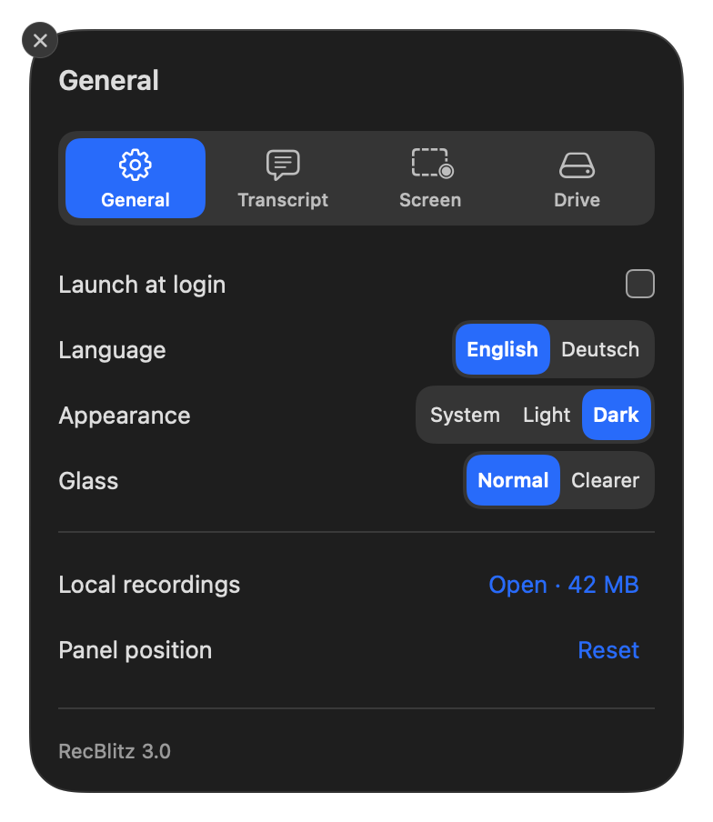
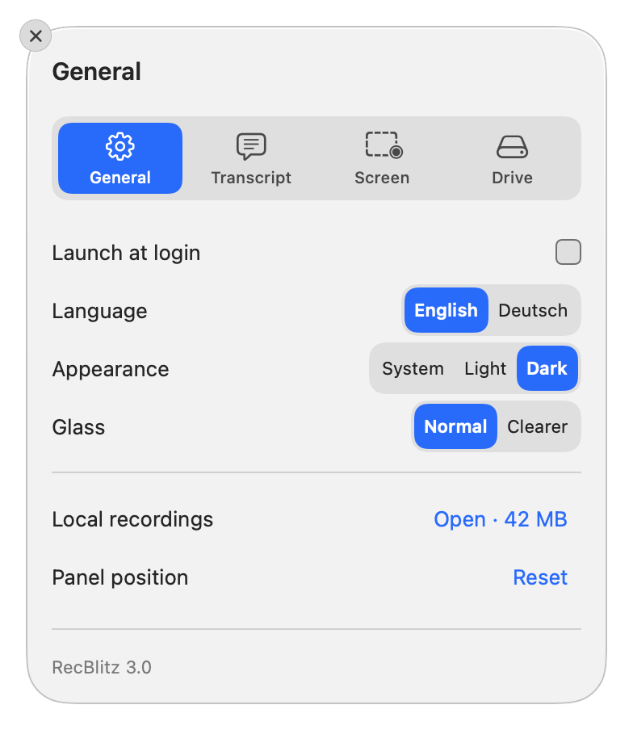
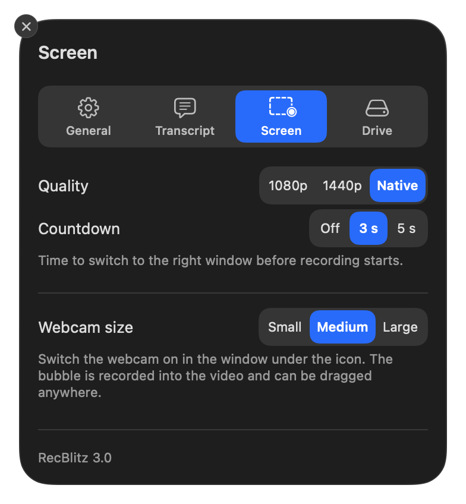
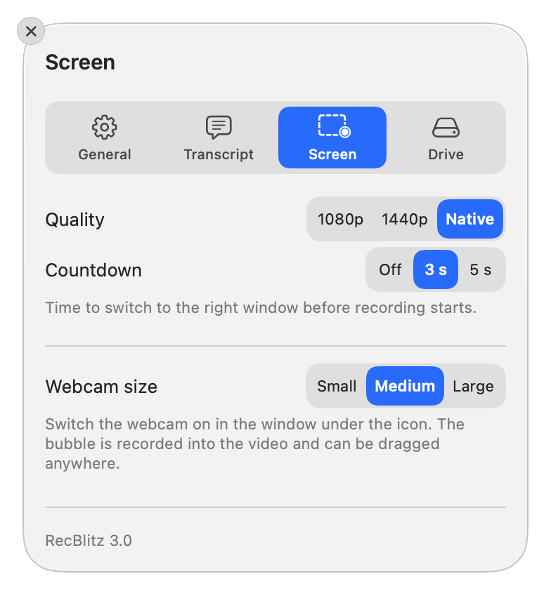

Everything it does
Small app, many details. All of it works without an account.
Voice note in one click
From the menu bar, or with ⌥⌘R without opening anything.
On-device transcription
Apple's SpeechAnalyzer. German, English, Spanish or automatic detection.
Audio only, Screen or Region
Each with two switches: Mic and System sound, both on by default.
Calls without a video
Audio only with System on records both sides of an online call and keeps no video.
Webcam bubble
Round and draggable, recorded into the video. Three sizes.
Countdown, pause, discard
A small control bar that never shows up in the recording.
Ready state
Place the region and the webcam first, then press record.
Title and summary
Per recording, through the Claude command line, if it is installed.
Markdown note
In any folder, for example your Obsidian vault.
Google Doc and Drive
Through rclone, with a share link on the clipboard and upload progress in percent.
Latest recording
In the panel: open the Doc or note, copy the transcript, copy the video link.
Several displays
Pick the screen. A region follows the display you drew it on.
Microphone menu
Choose which microphone to use, right in the panel.
Light and dark
Follows your Mac or set by hand. Glass Normal or Clearer.
English and German
Switch live in Settings. Follows your system language on first run.
Recordings stay local
The original video always stays in ~/Movies/RecBlitz, never deleted automatically.
Four tabs, nothing hidden
General, Transcript, Screen and Drive. The settings window floats next to the panel and is only as high as its content.




How it compares
Stars as of September 2026. For dictating into other apps, Handy and VoiceInk are excellent. For a Loom replacement with a team and a web player, use Cap. RecBlitz is for the case in between: you talk, and you want a note or a Doc afterwards, with the video attached when there is one.
| RecBlitz | Cap | Handy | VoiceInk | QuickRecorder | |
|---|---|---|---|---|---|
| Records the screen | yes | yes | no | no | yes |
| Transcribes | yes, on the Mac | yes (Cap AI) | yes, on the Mac | yes, on the Mac | no |
| Result | Markdown note, optional Google Doc and Drive link | share link, local export | text pasted into the active app | text pasted into the active app | video file |
| Title and summary per recording | yes, optional | no | no | no | no |
| Account needed | no | yes | no | no | no |
| License | PolyForm Strict | AGPL-3.0 | MIT | GPL-3.0 | AGPL-3.0 |
| Stars | new | 22.8k | 32.2k | 6.6k | 8.7k |